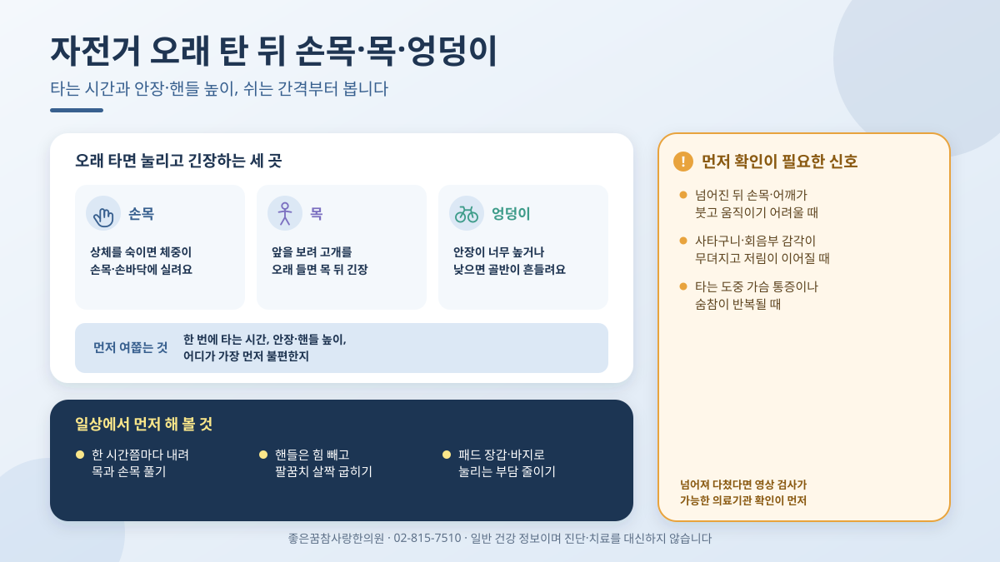
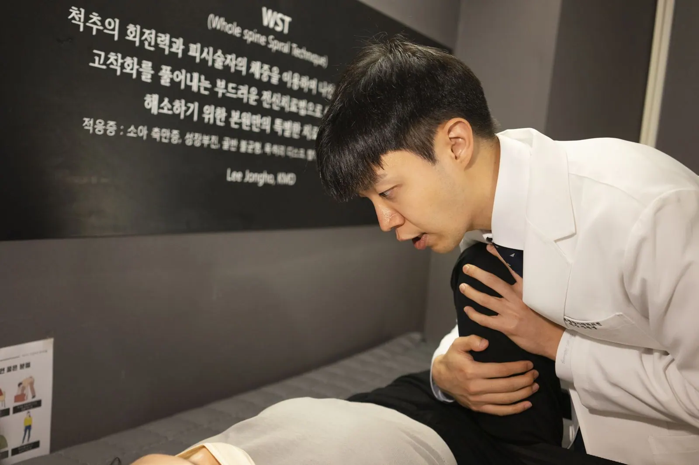
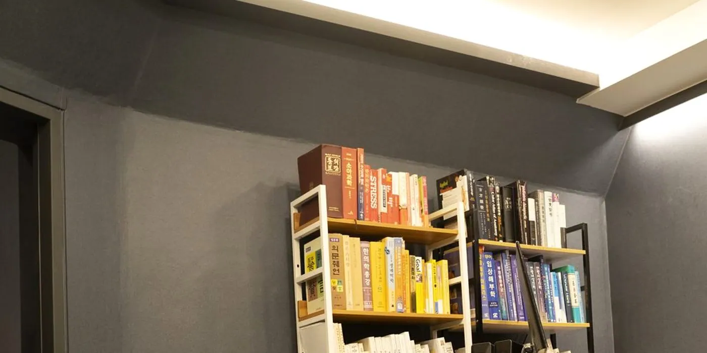

자전거를 오래 타면 상체를 숙인 채 손목과 목에 체중이 실리고 안장에 닿는 부위가 눌리기 쉽습니다. 타는 시간과 안장·핸들 높이를 먼저 묻고, 자세와 쉬는 간격을 함께 점검합니다.
여쭙는 것
- 한 번에 얼마나 오래 타시나요?
- 안장과 핸들 높이를 몸에 맞게 조절해 두셨나요?
- 손목과 목, 엉덩이 중 어디가 가장 먼저 불편한가요?
생활에서 해 볼 것
- 한 시간쯤마다 잠깐 내려 몸을 펴고 목과 손목 풀기
- 핸들을 꽉 쥐기보다 힘을 빼고 팔꿈치를 살짝 굽혀 충격 줄이기
- 안장과 핸들 위치가 몸에 맞는지 가끔 점검하기
한의원에서 함께 살필 것
- 라이딩 뒤 목과 어깨가 굳어 고개를 돌리기 불편한 경우 자세와 근육의 긴장을 함께…
- 손목과 손가락이 시큰하고 저린 경우 핸들 잡는 방식과 쉬는 간격을 함께 살핍니다.
- 안장에 닿는 부위가 계속 아프고 앉기 불편한 경우 생활 자세와 하루의 앉는 시간을…
먼저 확인이 필요한 신호
- 넘어진 뒤 손목이나 어깨가 붓고 움직이기 어려운 경우
- 사타구니나 회음부 쪽 감각이 무뎌지고 저린 느낌이 이어지는 경우
- 타는 도중 가슴 통증이나 숨참이 반복되는 경우

한강 자전거길을 따라 주말 라이딩을 다녀오면 손목이 시큰하고 목이 뻐근하며 엉덩이가 얼얼한 경험을 하는 분이 많습니다. 자전거가 몸에 맞지 않거나 쉬지 않고 오래 타면 같은 부위가 계속 눌립니다. 자세와 쉬는 간격을 점검하면 부담을 줄일 수 있는 경우가 많습니다.
왜 이런 불편이 생길 수 있나요
- 상체를 앞으로 숙이면 체중의 일부가 손목과 손바닥으로 실려 손바닥 쪽 신경이 눌릴 수 있습니다.
- 앞을 보려고 고개를 오래 들고 있으면 목 뒤 근육이 계속 긴장합니다.
- 안장이 너무 높거나 낮으면 골반이 좌우로 흔들려 엉덩이와 허리에 부담이 생깁니다.
- 처음부터 긴 거리를 타면 몸이 적응할 시간이 부족합니다.

먼저 이렇게 여쭙니다
- 한 번에 얼마나 오래 타시나요?
- 안장과 핸들 높이를 몸에 맞게 조절해 두셨나요?
- 손목과 목, 엉덩이 중 어디가 가장 먼저 불편한가요?
- 주로 어떤 자전거를 타시나요?
- 타고 난 뒤 이틀 정도 지나면 가라앉나요?
일상에서 먼저 해 볼 수 있는 것
- 한 시간쯤마다 잠깐 내려 몸을 펴고 목과 손목 풀기
- 핸들을 꽉 쥐기보다 힘을 빼고 팔꿈치를 살짝 굽혀 충격 줄이기
- 안장과 핸들 위치가 몸에 맞는지 가끔 점검하기
- 패드가 있는 장갑이나 바지로 눌리는 부위의 부담 줄이기
- 타고 난 뒤에는 따뜻한 샤워로 다리와 허리 긴장 풀기

한의원에서 함께 살필 수 있는 경우
- 라이딩 뒤 목과 어깨가 굳어 고개를 돌리기 불편한 경우 자세와 근육의 긴장을 함께 살핍니다.
- 손목과 손가락이 시큰하고 저린 경우 핸들 잡는 방식과 쉬는 간격을 함께 살핍니다.
- 안장에 닿는 부위가 계속 아프고 앉기 불편한 경우 생활 자세와 하루의 앉는 시간을 함께 살핍니다.
좋은꿈참사랑한의원에서는 타는 거리와 자세, 불편한 부위를 먼저 듣고, 필요하다고 판단될 때 목과 손목, 허리의 움직임을 직접 확인한 뒤 침·약침·추나 등을 상태에 맞춰 정합니다. 귀가 전에는 다음 라이딩 때 바꿔 볼 점을 함께 정리합니다.
이렇게 기록해 오시면 상담이 쉬워집니다
- 한 번에 타는 시간과 거리, 쉬는 간격
- 불편해지는 부위의 순서(손목·목·엉덩이 등)
- 손 저림이 있다면 어느 손가락인지
- 안장과 핸들 높이를 바꾼 적이 있는지

이런 증상은 먼저 확인이 필요합니다
- 넘어진 뒤 손목이나 어깨가 붓고 움직이기 어려운 경우
- 사타구니나 회음부 쪽 감각이 무뎌지고 저린 느낌이 이어지는 경우
- 타는 도중 가슴 통증이나 숨참이 반복되는 경우
넘어져 다친 뒤라면 영상 검사가 가능한 의료기관 확인이 먼저일 수 있습니다. 복용 중인 약은 처방한 의사와 상의 없이 줄이거나 끊지 않습니다.
한눈에 보는 표
| 구분 | 핵심 |
|---|---|
| 여쭙는 것 | 한 번에 얼마나 오래 타시나요? 안장과 핸들 높이를 몸에 맞게 조절해 두셨나요? |
| 생활에서 해 볼 것 | 한 시간쯤마다 잠깐 내려 몸을 펴고 목과 손목 풀기 핸들을 꽉 쥐기보다 힘을 빼고 팔꿈치를 살짝 굽혀 충격 줄이기 |
| 한의원에서 함께 살필 것 | 라이딩 뒤 목과 어깨가 굳어 고개를 돌리기 불편한 경우 자세와 근육의 긴장을 함께 살핍니다. 손목과 손가락이 시큰하고 저린 경우 핸들 잡는 방식과 쉬는 간격을 함께 살핍니다. |
| 먼저 확인이 필요한 신호 | 넘어진 뒤 손목이나 어깨가 붓고 움직이기 어려운 경우 사타구니나 회음부 쪽 감각이 무뎌지고 저린 느낌이 이어지는 경우 |
자주 묻는 질문
장거리 라이딩 뒤 손이 저린 것은 흔한가요?
핸들에 하중이 쏠리면 생길 수 있는 경우가 많아 잡는 방식과 쉬는 간격을 먼저 살펴보길 권합니다.
안장이 딱딱한 것이 원인인가요?
안장과 몸의 자세가 맞지 않을 때 불편이 커질 수 있어 높이와 각도를 함께 점검해 보시길 권합니다.
라이딩 다음 날에도 손목이 시큰하면 어떻게 하나요?
하루 이틀은 손목을 무리하게 쓰지 않는 편이 좋습니다. 저림이 계속되거나 힘이 빠진다면 상담해 보세요.
처음 장거리를 타려면 어떻게 늘려야 하나요?
한 번에 거리를 크게 늘리기보다 매주 조금씩 늘리고, 중간에 쉴 지점을 미리 정해 두는 편이 몸이 적응하기 쉽습니다.
이 글은 일반적인 건강 정보이며 개인의 진단이나 치료를 대신하지 않습니다. 증상이 있거나 복용 중인 약이 있다면 진료를 통해 확인하세요. 치료 효과는 개인마다 다를 수 있습니다.
작성 기준: 일반적으로 알려져 있는 건강 정보를 참고해 정리했습니다(대표원장 감수). 증상 기록은 1~2주 동안 하루 1회, 비슷한 시간에 적어 오시면 지난 상태와 비교하기 쉽습니다.
좋은꿈참사랑한의원은 재진 때 지난번 이야기부터 이어서 여쭙니다. 진료시간과 예약은 오시는 길에서 확인하세요.